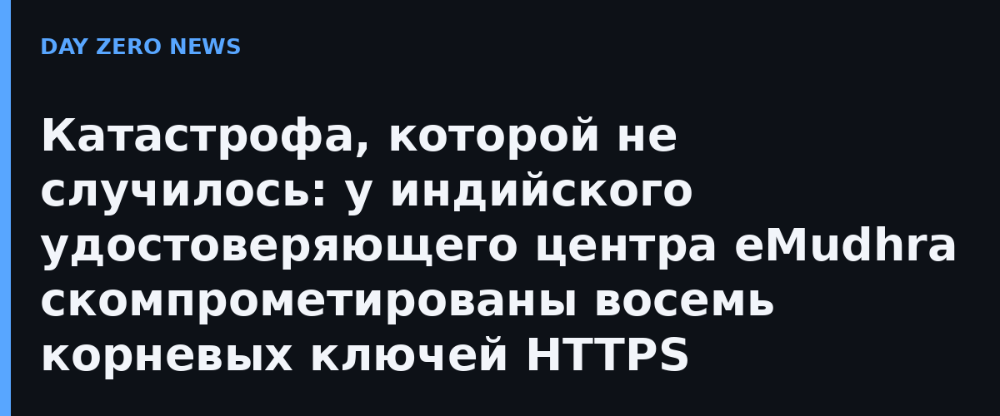

17 октября 2026 года в 20:06 UTC Mozilla получила сообщение от независимого исследователя: приватные ключи восьми промежуточных удостоверяющих центров (CA) индийской компании eMudhra скомпрометированы. Такие ключи позволяют злоумышленнику выпускать поддельные HTTPS-сертификаты для любых сайтов — классический сценарий атаки «человек посередине». Инженеры Mozilla отреагировали почти мгновенно: уже к 22:59 UTC того же дня блокировка через список отзыва OneCRL дошла до всех пользователей Firefox со стандартными настройками — без обновлений и перезапуска браузера. Дополнительно вышли Firefox 158.0.1, ESR 115.43.1 и ESR 153.5.1 для тех, у кого собственные настройки мешали получить обновление, а в NSS 3.131.1 убрали и корневой сертификат, подписавший проблемные промежуточные.
В официальном заявлении от 21 октября eMudhra объяснила: восемь промежуточных CA были созданы 30 апреля 2025 года на церемонии генерации ключей (Key Generation Ceremony) на сертифицированных FIPS 140-2 Level 3 аппаратных модулях. Причина — ошибка в одном шаге процедуры, операции «обёртки/развёртки» (wrap/unwrap) ключей, а не отсутствие HSM. Все восемь сертификатов аннулированы 19 октября; Apple заблокировала их 19-го, Microsoft — 20-го, остальные доверенные хранилища уведомлены.
Главное отличие от прошлых скандалов вроде DigiNotar: ни один из восьми промежуточных CA не успел выпустить ни одного конечного сертификата — это подтверждено и внутренней проверкой eMudhra, и публичными логами Certificate Transparency (crt.sh). Семь из восьми вообще не использовались в производстве, а единственный «боевой» не выпустил ни одного сертификата. Инфраструктура компании не взломана, данные не утекли. Доверенные хранилища (root-программы) в качестве меры предосторожности отключили доверие к корневому ECC-сертификату eMudhra. Компания обещает публичный разбор причин, повторный обзор всех церемоний генерации ключей и redundant-сертификаты от второго CA для корпоративных клиентов.
Обычным пользователям достаточно держать браузер обновлённым — Firefox, Chrome и Safari уже получили защиту автоматически, специально ничего делать не нужно. Организациям, чьи сертификаты когда-либо цеплялись на корень eMudhra Global TLS ECC, стоит проверить цепочки доверия у своих поставщиков TLS-услуг: времени на подмену сертификатов у атакующих фактически не было, но бдительность в мире WebPKI никогда не лишняя. История в который раз показывает: слабое звено инфраструктуры доверия — не квантовые атаки, а процедура с человеческим участием.